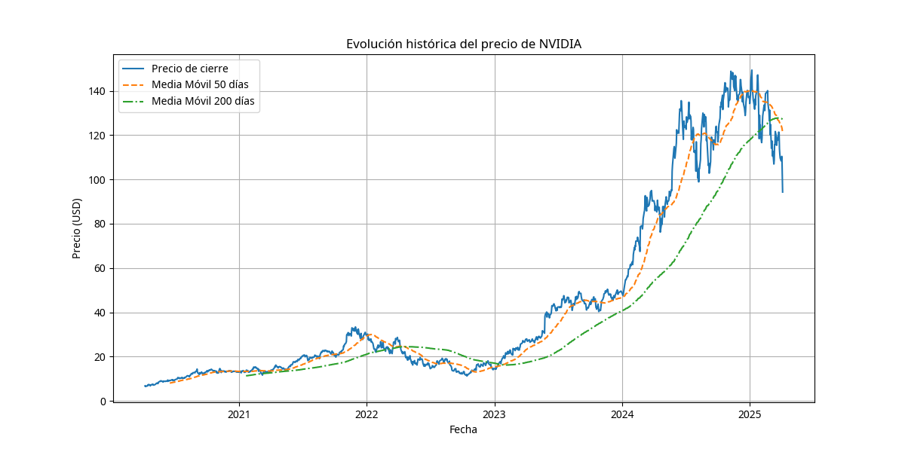
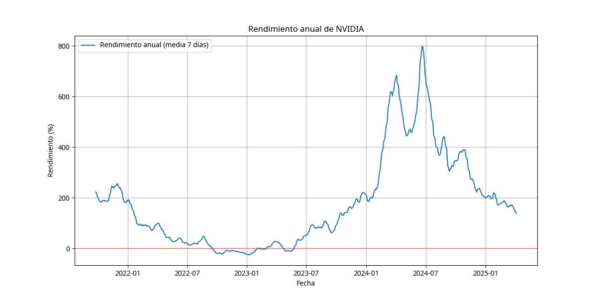
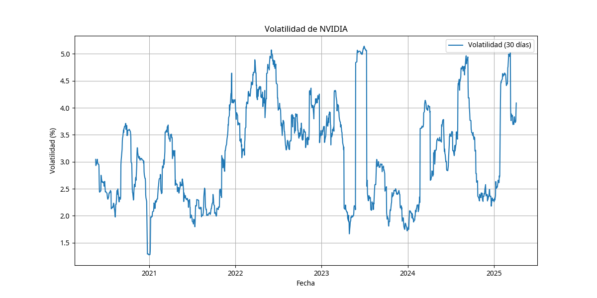

Rendimiento Último Año
Crecimiento excepcional impulsado por la demanda de IA
Rendimiento 5 Años
Crecimiento compuesto anual superior al 45%
Volatilidad Actual
Superior a la media del mercado
Distancia Máximo Histórico
Ligera corrección desde máximos recientes
Evolución Histórica del Precio
El gráfico muestra la evolución del precio de cierre de NVIDIA junto con las medias móviles de 50 y 200 días. Se observa una clara tendencia alcista a largo plazo, con periodos de consolidación seguidos de fuertes movimientos al alza.
Rendimiento Anual
El gráfico muestra el rendimiento anual de NVIDIA (media móvil de 7 días). Los periodos por encima de la línea roja representan rendimientos positivos en términos anuales. Se observa una tendencia de rendimientos positivos sostenidos en los últimos periodos.
Volatilidad
El gráfico muestra la volatilidad de NVIDIA calculada como la desviación estándar de los rendimientos diarios en una ventana móvil de 30 días. Se observan picos de volatilidad coincidiendo con eventos significativos del mercado y de la empresa.
Conclusiones del Análisis Histórico
- NVIDIA ha mostrado un rendimiento excepcional en los últimos años, superando significativamente al mercado general y a su sector.
- La tendencia a largo plazo es claramente alcista, con el precio actual muy por encima de las medias móviles de 50 y 200 días.
- La volatilidad ha sido elevada pero justificada por los fuertes movimientos alcistas.
- El precio actual se encuentra cerca de máximos históricos, lo que refleja las expectativas positivas del mercado.
- La valoración actual incorpora expectativas muy optimistas, lo que podría limitar el potencial de revalorización a corto plazo.